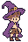
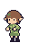

손님 01 · 여행자 키프레임
정한 팔레트와 부위별 크기를 사용한8개 주요 포즈입니다. 각 그림은 같은32×48 원본과3배 배율로 표시합니다.
테두리·눈피부셔츠·침낭머리·가죽반바지·배낭 밝은 면
5색 · 팔레트 밖0 · 반투명0 · 외곽선 위반0
기준선: 머리11~26행 / 몸통27~39행 / 다리·신발40~46행 / 발46행. 모자·배낭 같은 부착물은 머리 크기에 포함하지 않습니다.
대기

같은 머리·몸통·다리 기준을 유지한 대기 포즈입니다.
물약은 받기 포즈에서 별도로 합성해 접점을 확인합니다.
같은 크기의 얼굴 수정 캐릭터와 비교

주인공 v7
엘프 v7여행자현재는 키프레임 검토 단계입니다. 행동 사이의 중간 프레임·속도·호흡과 부분 움직임을 합친 완성 애니메이션은 다음 단계에서 제작합니다. 물약은 캐릭터 그림에 칠하지 않고 별도 병으로 합성합니다.